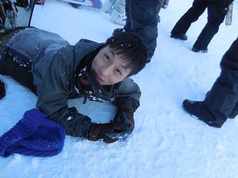

|
２月９〜１１日のスキー合宿の写真を載せています！ スキー合宿担当の平君と松本君ありがとう！ 部屋でまったり女子会。 ぶりっ子(？)ポーズ。 一男ｓ。 ネタ要員の一男とポテンシャルを感じさせる一女のツーショット ちゃんとスキー楽しんでますよ。そのいち。 そのに。 そのさん。 そのよん。 イイネ！ 山頂から撮影したそうで。ほほう(感嘆) 毎年恒例(？)のかまくら作り。 
作成の様子。 なんか「これじゃない」感な。 これでもないんだよなぁ。 いい笑顔。 留学生二人と須合(１年)。須合は個人的にスノボ行った翌日にこの合宿に参加してるとか。タフですね。 クレープおいしいよね。 口に雪をいれられる木原(１年)。  でもこの笑顔。ええ子や…。 
ナイター組いってら！ ２日目から途中参加した高橋。執念。 とりあえず小林(２年) 帰りのバスにて。 お疲れさまでした！！！ (※写真へのコメントは全て管理人がしております。) |